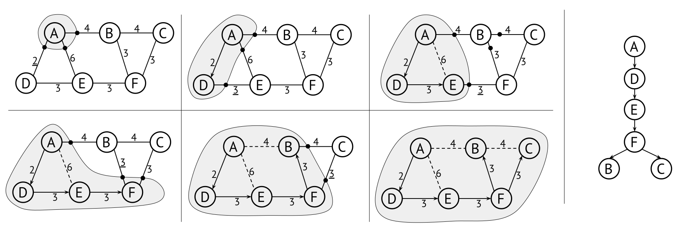

12.4 Minimum spanning trees and Prim’s algorithm
As explained in Section 12.1, a spanning tree of an undirected graph is a tree that includes (spans) all the vertices of the graph. Interesting fact: The number of edges in a spanning tree is exactly V-1. (Why is this? Try to convince yourself about it.)
If the graph is weighted, a minimum spanning tree (MST) is a spanning tree whose total cost is as small as possible. A graph often has several MSTs – for example, if all weights are the same, then all spanning trees are MSTs. Figure 12.7 shows a graph and two possible MSTs for it, each with a combined weight of 20. You may not immediately recognize the two MSTs as trees, since there is no root element and no clear parent/child relationships between nodes. If you “lift” either MST by any node, assigning it as the root, you will get a tree as the ones we have seen in earlier chapters.
The minimum spanning tree is used in many different algorithms, and there are a lot of use cases which rely heavily on finding the MST – for example, when designing all kinds of networks, such as computer networks, telecommunications networks, transportation networks, water supply networks, and electrical grids.
Note that an MST is different from a Shortest Path Tree (as produced by Dijkstra’s algorithm). If our graph is a set of islands and the edges represent possible bridges between them, weighted by length of the bridge, then Dijkstra’s gives lets us optimise bridges to have as short total distance from a designated starting node. The MST instead shows the shortest possible total length of bridges required to connect all islands. Both these are useful for different applications, and it is important to understand the difference.
In this book you will learn two algorithms for finding the MST of a graph: Prim’s algorithm is another example of a graph traversal, whereas Kruskal’s algorithm is a different kind of algorithm.
12.4.1 Prim’s MST algorithm
Similar to Dijkstra’s algorithm, Prim’s uses a priority queue, but
instead of prioritising edges by total cost, they are prioritised only
by their weight. This means that an implementation of Dijkstras as we
have seen before can be changed into Prim’s as easily as changing
cost+weight to just weight!

Figure 12.8 shows the execution of Prim’s algorithm. The algorithm is very easy to run with pen and paper: Simply circle the currently visited nodes, and select the edge with the lowest cost that intersects the perimeter of the circle. Note that after visiting F in this example there are two edges with the same weight (3). Which one we choose depends on the inner working of the priority queue, and may affect the final shape of the MST, but the result will always be an MST.